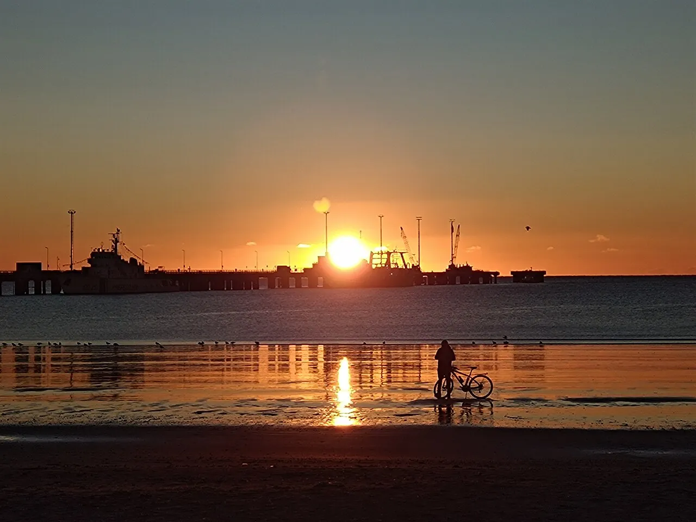

Puerto Madryn
Chubut, Argentine · plongée, snorkeling, kayak

Golfe de Patagonie où l’on nage avec les lions de mer et où les baleines franches viennent mettre bas. Nature sauvage.
- Lieu
- Chubut, Argentine
- Niveau
- Intermédiaire
- Activités
- plongée, snorkeling, kayak
- Type d'eau
- Mer / océan
- Coordonnées
- -42.77, -65.04 (position approximative du secteur)
Dangers à connaître
- Eau froide.
- Lions de mer sauvages.
Le conseil d'Ocean Buddy
Les baleines sont présentes de juin à décembre : observe-les depuis le rivage ou un bateau agréé.
Ouvrir dans Ocean Buddy Télécharger sur l'App Store
Source : Fiche Ocean Buddy · septembre 2026 · à vérifier localement.